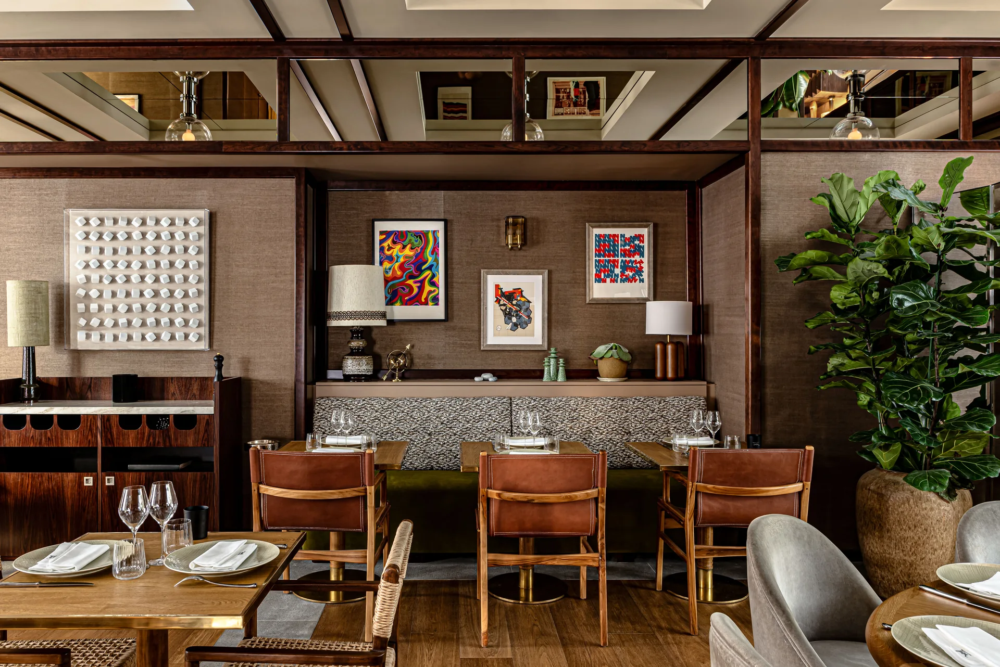
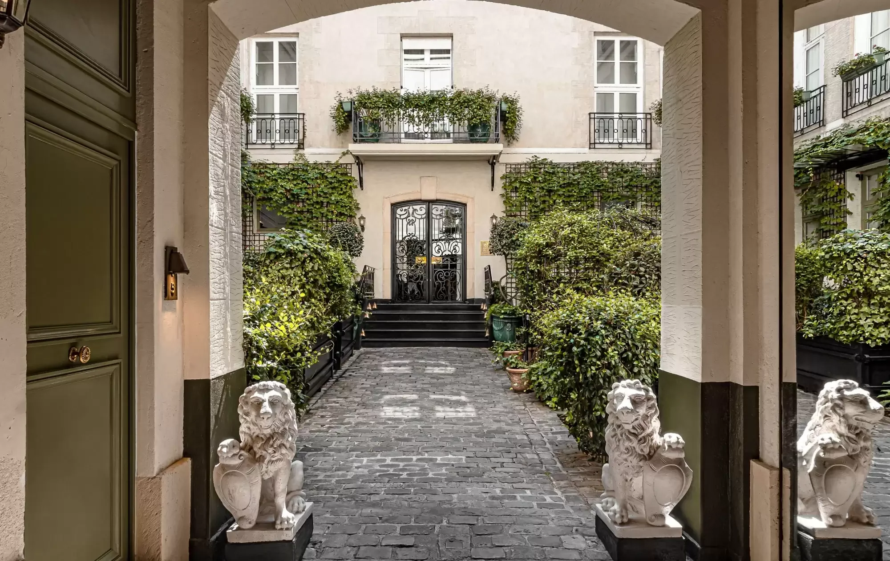
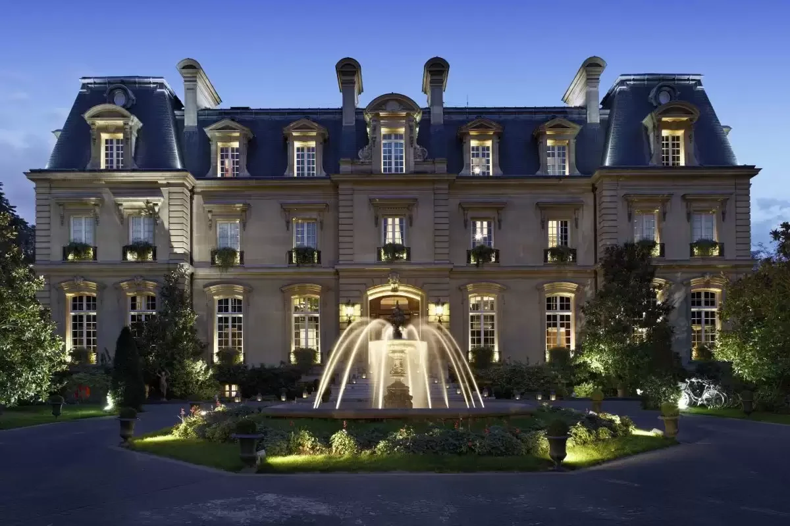
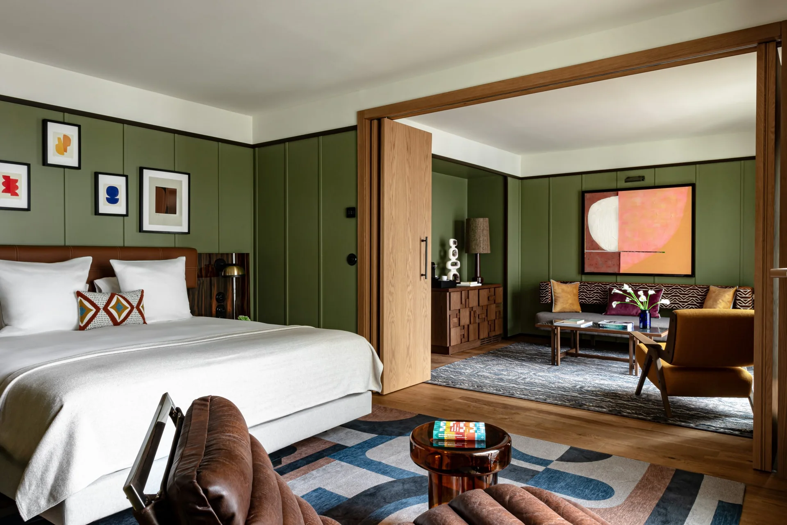
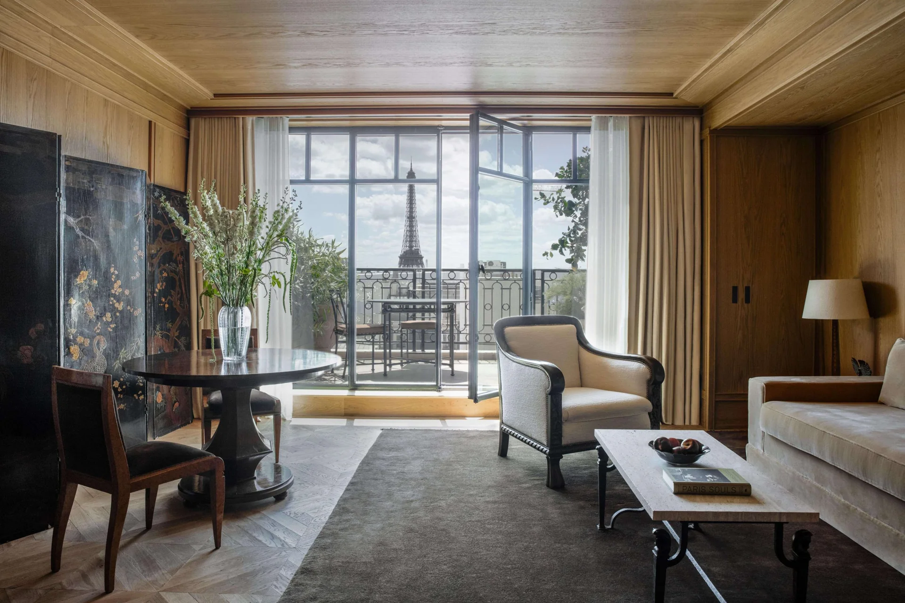
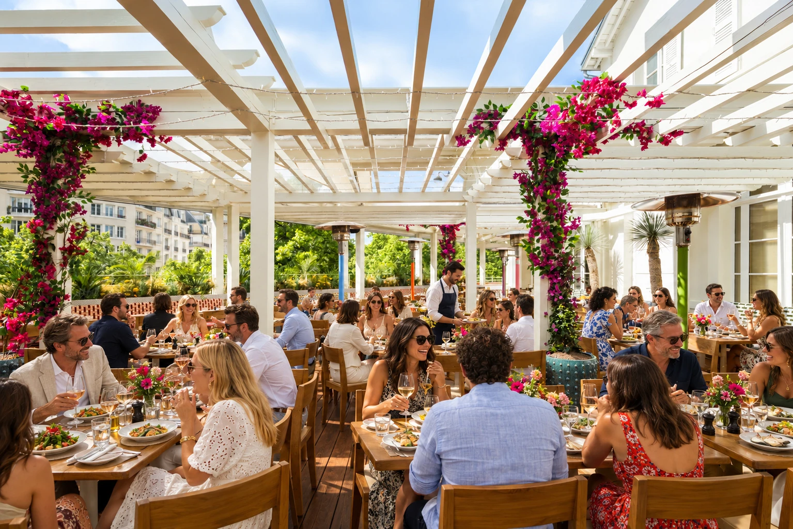

Nos hôtels
Prolonger l’événement
Quatre hôtels cinq étoiles au cœur de Paris, pour accueillir vos invités le temps d’une nuit, d’un séminaire ou d’un mariage.
Recevoir jusqu’au lendemain
“Un dîner dans l’une de nos maisons, une nuit à quelques pas : vos invités n’ont plus qu’à profiter.”

Saint-Germain-des-Prés · Relais & Châteaux
Relais Christine
Un hôtel particulier caché derrière sa cour pavée, en plein Saint-Germain-des-Prés : le calme d’une maison, à quelques pas de la Seine et des brasseries de la Rive gauche.
- Chambres
- 48
- Étoiles
- 5
- Spa
- Guerlain

Paris 16e · Relais & Châteaux
Saint James Paris
Un château au cœur de Paris, entouré de son jardin : salons, bibliothèque-bar et terrasse pour recevoir en petit comité, à deux pas de l’Étoile.
- Chambres
- 50
- Étoiles
- 5
- Spa
- Guerlain

Champs-Élysées · Small Luxury Hotels
Norman
Un hôtel intime à deux pas des Champs-Élysées, où la cheffe Thiou signe une table thaïe et son patio, à privatiser pour vos dîners.
- Chambres
- 37
- Étoiles
- 5
- Restaurant
- Thiou

Champs-Élysées · Relais & Châteaux
Balzac
Une adresse élégante dans une rue calme du 8e arrondissement, à quelques minutes de l’Arc de Triomphe et de nos maisons des Champs-Élysées.
- Chambres
- 58
- Étoiles
- 5
Pour votre événement
Un événement, puis une nuit
Dites-nous combien de chambres il vous faut : nous organisons l’événement et l’hébergement dans une seule demande.
- 01Un séminaire sur deux jours
Une journée de travail dans l’une de nos maisons, un dîner, puis la nuit à l’hôtel : le lendemain, vos équipes reprennent sans traverser Paris.
Les séminaires - 02Un mariage
Des chambres pour vos proches, une suite pour les mariés et un salon pour les préparatifs, à quelques minutes du lieu de réception.
Les mariages - 03Des invités venus de loin
Clients, partenaires ou famille : logez-les au plus près de votre événement, dans le quartier qui vous convient.
Demander un devis

Rive gauche
Le Relais Christine, voisin du Procope

Champs-Élysées et Ouest
Trois hôtels près de l’Étoile
Votre événement
Un événement, des invités à loger
Décrivez-nous votre événement et le nombre de chambres : une seule demande suffit, notre équipe s’occupe du reste.